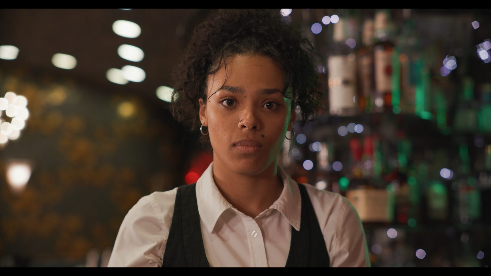
Director of Photography
Read The Room
A psychic bartender must stop a murder by one of her regular customers.
Ricardo Dallas is a Sacramento-based filmmaker and Sacramento State graduate working across cinematography, directing, and editing.
Explore the work
A psychic bartender must stop a murder by one of her regular customers.
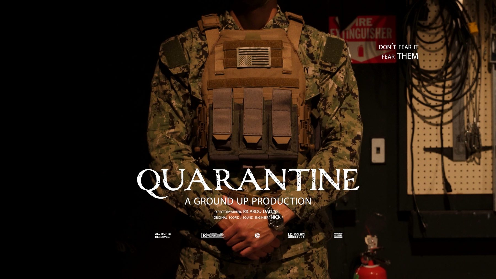
A young woman searching for her brother is questioned at a military base in a post-apocalyptic world.
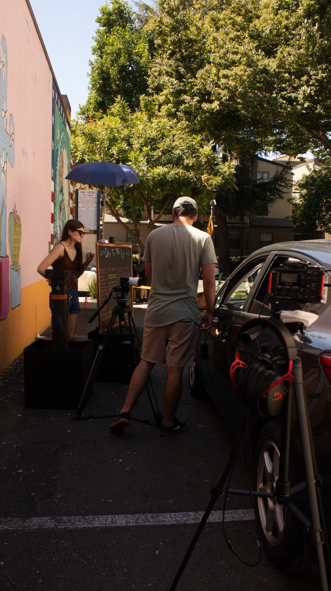
A couple visits their weed dealer, whose unexpected wisdom brings the boyfriend close to enlightenment.
I'm Ricardo Dallas, a filmmaker and Sacramento State graduate with a focus on cinematography. My work is grounded in visual storytelling—using composition, lighting, and camera movement to create an emotional connection to the story.
My experience also extends into directing and editing. On Quarantine, I directed actors and crew while also serving as director of photography and editor. On Read The Room and Beefer, I developed and worked from shot lists and lighting plans to translate ideas into intentional images on set.
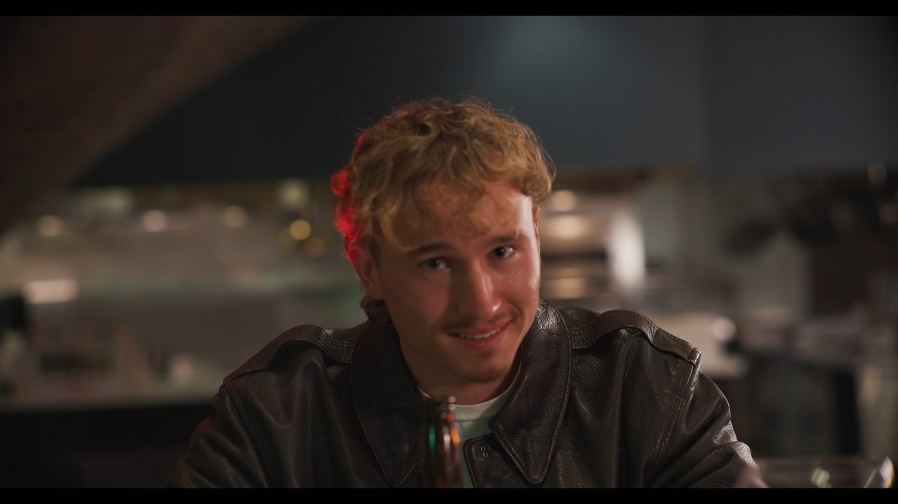
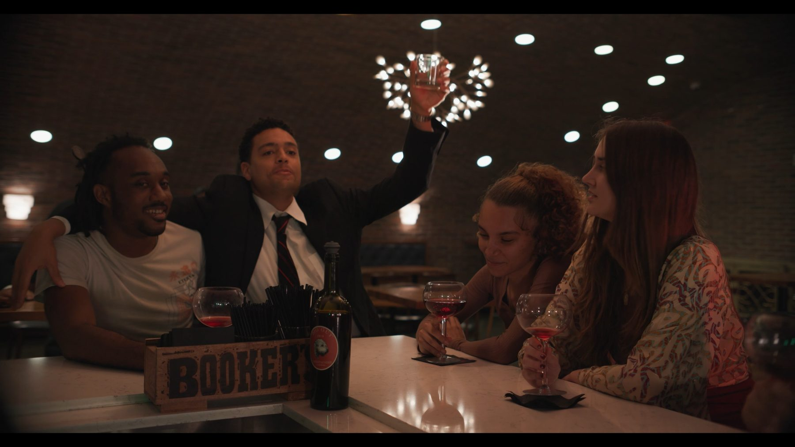
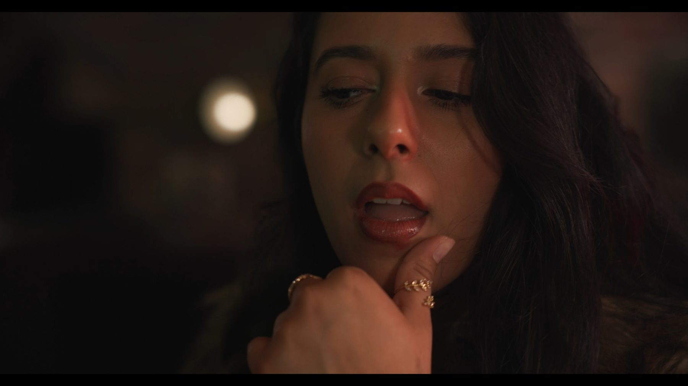
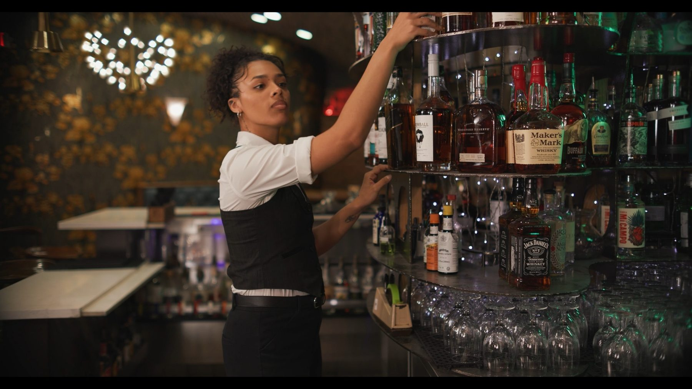
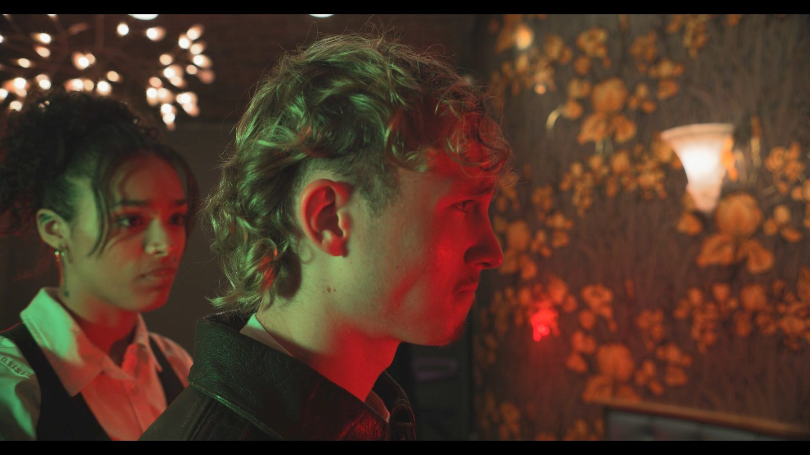
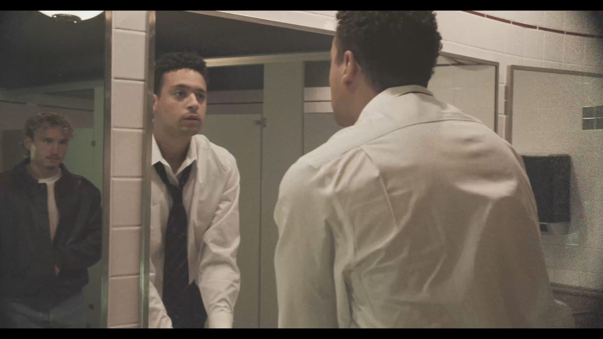
A psychic bartender has to stop a murder by one of her regulars.
My contribution: I created the shot list and lighting diagrams used to plan coverage and determine where lights would be placed during production.
On-set camera, lighting, and crew setups from production.
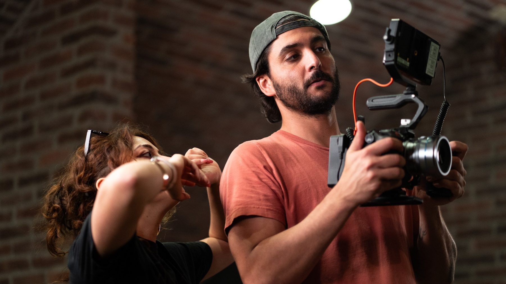
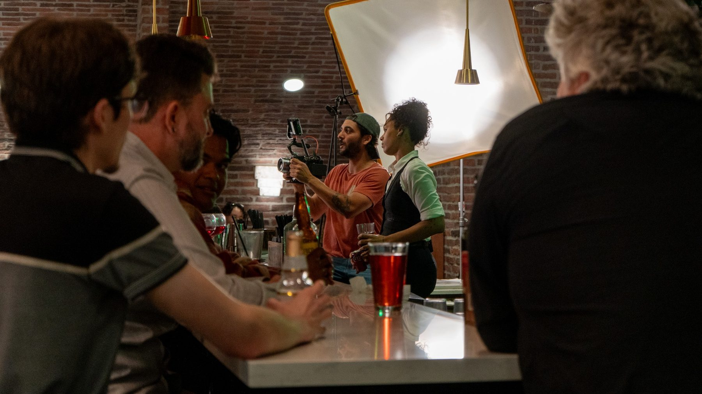
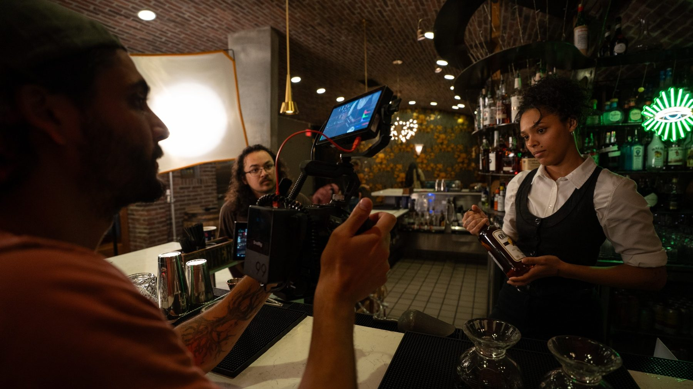
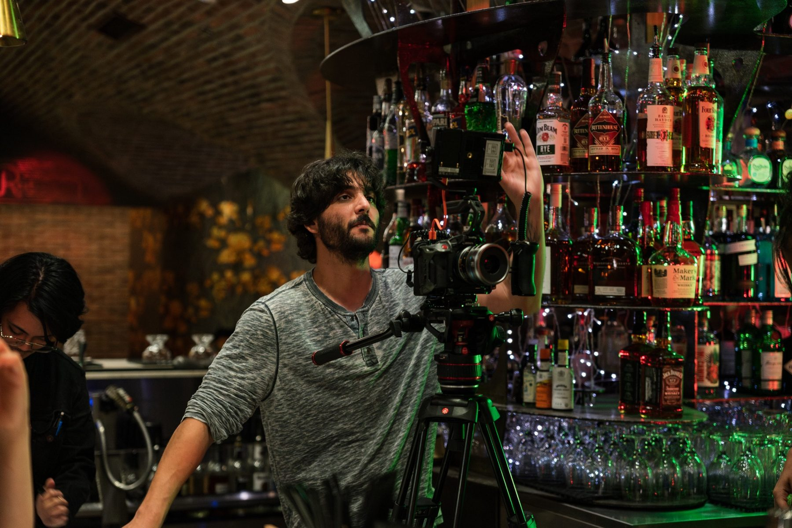
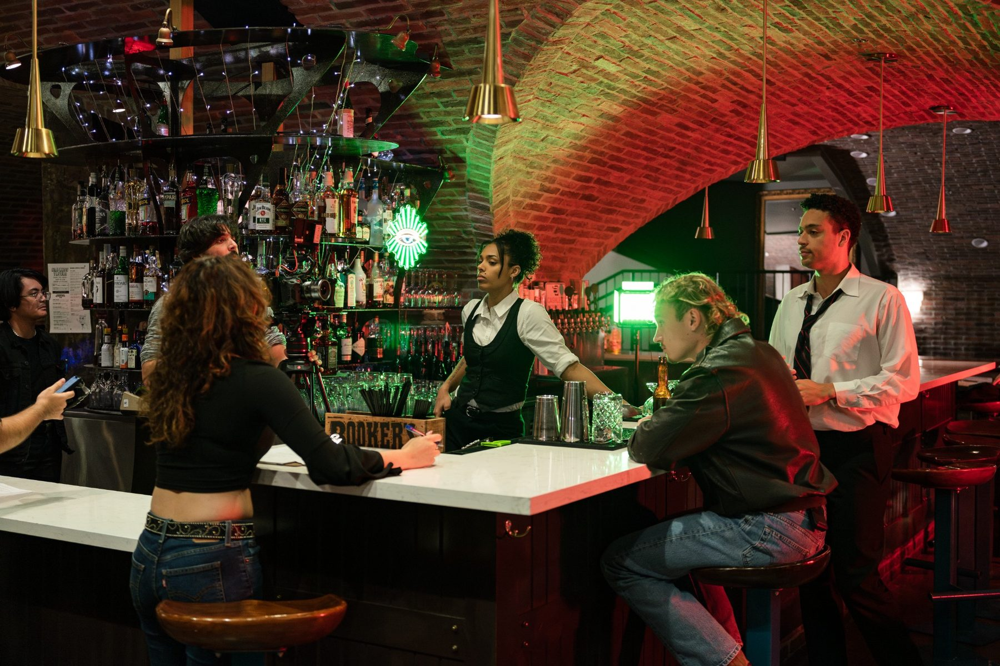
A girl lost in a post-apocalyptic world searches for her brother and is questioned at a military base before being quarantined.
What I learned: This project taught me how to direct actors and crew, while developing the ability to troubleshoot problems as they arose during production.
A couple visits their weed dealer, who gives the boyfriend wisdom that brings him almost to enlightenment.
My contribution: As director of photography, I helped develop the shot list and used it to gather coverage and determine lighting placement on set.
The gallery brings together camera, lighting, blocking, and crew moments from multiple shoot dates rather than a single production day.
This section is ready for a YouTube or Vimeo embed as soon as the reel is published.
For collaborations, productions, and cinematography opportunities.
Email Ricardo